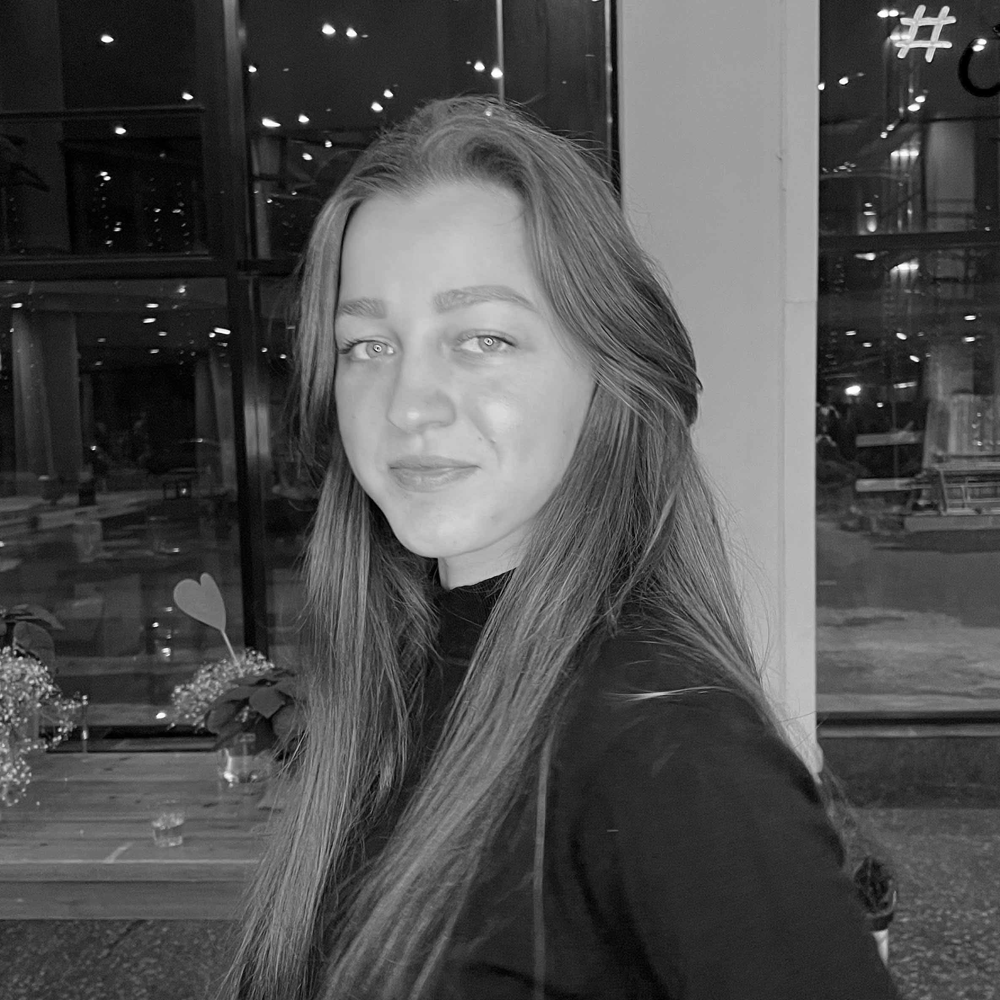

RESUME
Natia Kerdzaia
Junior Front End Developer
Contact Information:
Brief Information about me
Highly motivated entry level Front-end developer, who is able to build responsive web pages with basic knowledgein HTML5/CSS3, Javascript and willing to learn more and became successful in this field.
Also, I have basic knowledge in jQuery, git and small experience in Javascript’s framework Vue.js
Now I’m taking a New Horizons Course: JavaScript and Front End Frameworks. After that I’m going to take an international Information Technology Specialist certification test in JavaScript.
I graduated from high school Physics and Mathematics in 2016 and also got Bachelor degree in Electronics Engineering in 2020. I love Technical subjects from my childhood and keen on to continue studying and master the most popular and required profession today. I’m obsessed with drawing and graphic design too, so building designed webpage with technical skills is incredible for me and the best way to use my both - technical and artistic skills.
When I heard about Rs school I was happy, because I think it will give me a great education in Front-end developement and I will be able to improve my self-studying, also interview skills and a good opportunity to get a job in one of the world’s largest company as a FE developer.
Skills
- HTML5/CSS3
- JavaScript
- jQuery
- Visual Code Studio
- Adobe Photoshop , Illustrator, InDesign
- AutoCad
Education
- 2016 - 2020 BA in Engineering - Agricultural University of Georgia
- 2011 - 2016 High School Diploma - 42 Public School of Physics and Mathematics
Courses
Udemy - Daniel Walter Scott
Responsive Web Design Essentials - HTML5 CSS3Bootstrap
CodeHS
Intro to Programming with Karel the Dog (Ace)
freeCodeCamp
- Responsive Web Design
- JavaScript Algorithms and Data Structures
New Horizon
JavaScript and Front End Frameworks (in progress)
RS Schools Course
JavaScript/Front-end. Stage 0 (in progress)
Projects
freeCodeCamp Projects:
- Tribute Page
- Survey Form
- Product Landing Page
- Technical Documentation Page
- Personal Portfolio Webpage
New Horizon Project:
Georgian National Museum WebpageCode Example
$(document).ready(function(){
$("#btn").click(function(){
$.ajax({url: "contactinformation.txt", success: function(result){
$("#getInfo").html(result);
$("#btn").remove();
}});
});
});
Work Experience
Feb 2020 - Present
Senior Lab Assistant
Research Department of Radiophysics and Electronic Systems Modelling of LEPL Ilia Vekua Sokhumi Institute of Physics and Technology
Mar 2020 - Present
Freelance Graphic Designer
Fiverr and Upwork Marketplaces
Jan 2019 - Mar 2019
Electronics Engineer Intern
Softmaster Georgia
Languages
- Georgian (Native)
- Russian (B1)
- English (B2)
I have basic fluency in english (B2). I can communicate, study and work in english environment. I have studied english at school, then I continued studing english at the univesity. Now I communicate in English on my New Horizons course with my lecturer and also I have communication in english with my clients on the freelance platforms. Speaking english is a little bit my Achilles heel, but I’m working on it.